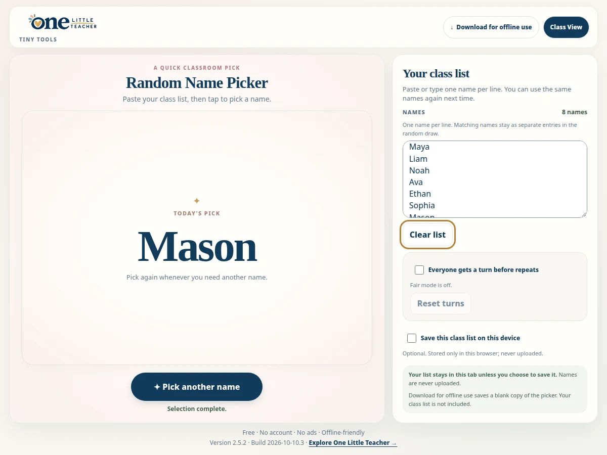

Participation
Random Name Picker
Pick from a class list for turns and classroom activities.
Free · Offline-friendly
Ways to use it
- Support participation across a class.
How to use it
- Enter one name per line.
- Optionally enable Everyone gets a turn before repeats.
- Choose Pick a name; reset turns when needed.
Practical details
Saving the class list on this device is optional. Matching names remain separate entries in the draw.
Explore together
Choose the setup that fits your lesson or classroom routine.